|
|
| brittle stars text index | photo index |
| Phylum Echinodermata > Class Stellaroida > Subclass Ophiuroidea |
| Flat-armed brittle star awaiting identification* updated Apr 2020 Where seen? This agile but well camouflaged brittle star is sometimes commonly encountered on our Northern shores, among seagrasses as well as on sand and silty sand. Sometimes large numbers may be seen. It is more active at night and can move about rapidly among seagrasses and over sand. Features: Disk diameter less than 1cm, arms about 5cm long. Central disk flat and smooth, some are circular, others have a distinct petal-like shape with scalloped edges. Arms wide and flattened, with tapered pointed tips. Spines short and flattened, in a row along the sides of the arms. Long tapered tube feet emerge from the arms. Colours usually match the sand, often with a pattern of bars along the length of the arms. Usually brown, beige or greenish. The brittle stars on this page are probably from different species. They are grouped together for convenience of display. |
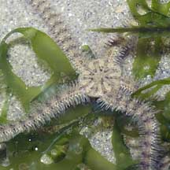 Changi, Jun 05 |
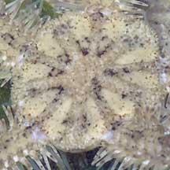 Upperside, some with scalloped edges. |
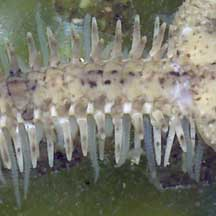 Upperside of arm. |
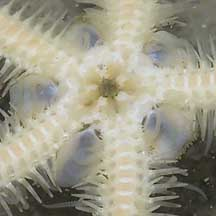 Underside. |
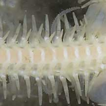 Underside of arm with flat spines and long tapered tube feet. |
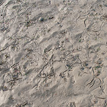 Sometimes seen in large numbers. Chek Jawa, Aug 07 |
|
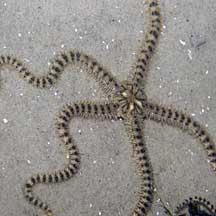 Chek Jawa, Sep 10 |
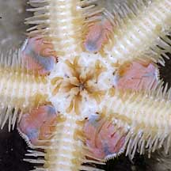 Underside. |
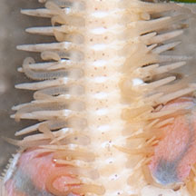 Underside of arm with flat spines and long tapered tube feet. |
 |
*Species are difficult to positively identify without close examination.
On this website, they are grouped by external features for convenience of display
| Flat-armed brittle stars on Singapore shores |
On wildsingapore
flickr
|
| Other sightings on Singapore shores |
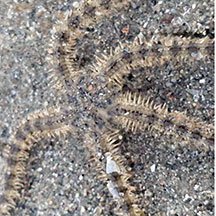 Stuck on a sand collar. Changi East (Lost Coast), Jul 24 Photo shared by Che Cheng Neo on facebook. |
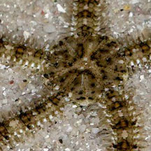 |